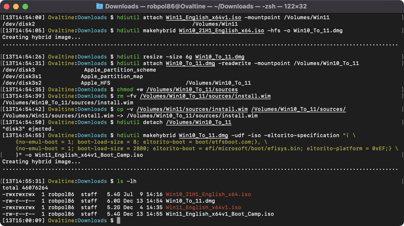

Install Windows 11 on an Intel Mac#
This guide lays out the steps I take to install Windows 11 on my Intel-based Apple computers using a custom ISO. This allows me to bypass the current TPM 2.0 requirement, since at this time Boot Camp does not provide TPM 2.0 to Windows.
Create ISO#
{kind=link}
File Name |
sha1sum / Get-FileHash -Algorithm SHA1 |
|---|---|
Win10_21H1_English_x64.iso |
78AA5FA0FD332EE0822EF5A533CD2CFE12333274 |
Win11_English_x64v1.iso |
9CBBB18B244511BF1D4C68A33FE6EE35D2EDA2AE |
The key ingredient in this guide is the custom ISO we’ll be creating. Essentially it’s a Windows 10 ISO, but with the payload file being replaced with the one from Windows 11. Think of it as the Windows 10 installer installing Windows 11 for you.
You’ll need to download the Windows 11 ISO as well as a Windows 10 ISO. The table above shows the files I used at the time of writing. To create the custom ISO follow these steps:
- Mount the Windows 11 ISO
hdiutil attach Win11_English_x64v1.iso -mountpoint /Volumes/Win11
- Convert the Windows 10 ISO to a temporary writable image and mount it
hdiutil makehybrid Win10_21H1_English_x64.iso -hfs -o Win10_To_11.dmg hdiutil resize -size 10g Win10_To_11.dmg hdiutil attach Win10_To_11.dmg -readwrite -mountpoint /Volumes/Win10_To_11
- Copy the payload file from the Windows 11 ISO into the temporary image
chmod +w /Volumes/Win10_To_11/sources rm -fv /Volumes/Win10_To_11/sources/install.wim cp -v /Volumes/Win11/sources/install.wim /Volumes/Win10_To_11/sources/
- Unmount and convert the temporary image file into the final Boot Camp ISO file
hdiutil detach /Volumes/Win10_To_11 hdiutil makehybrid Win10_To_11.dmg -udf -iso -eltorito-specification "( \ {no-emul-boot = 1; boot-load-size = 8; eltorito-boot = boot/etfsboot.com;}, \ {no-emul-boot = 1; boot-load-size = 2880; eltorito-boot = efi/microsoft/boot/efisys.bin; eltorito-platform = 0xEF;} \ )" -o Win11_English_x64v1_Boot_Camp.iso
- Clean up
rm -v Win10_To_11.dmg hdiutil detach /Volumes/Win11
For the Curious
The
eltorito-specificationstring is a NeXTSTEP plist defining the boot catalog. This isn’t needed when using the ISO exclusively with Boot Camp, but it’s needed to make the ISO properly bootable in both traditional BIOS and modern EFI non-Apple computers. This way you can use the same ISO with virtual machines on hosts without TPM 2.0.boot-load-sizewas derived from the eltorito-boot file size in bytes divided by the 512 byte sector size.I found the value of
eltorito-platformby doing a diff of the dumpet output.
Install#
{kind=link}
{kind=link}
{kind=link}
This step is pretty straightforward. You follow the same steps as you would when installing Windows 10 on your Mac.
Run the Boot Camp Assistant and choose the ISO you’ve just created.
Since I plan on removing macOS at the end I gave all the space I could to the Windows partition.
Your Mac should automatically reboot into the Windows installer.
After Windows 11 boots up the Boot Camp software installer should auto start to install drivers. Finish setting that up and reboot.
If you plan on removing macOS don’t enable BitLocker yet.
For the Curious
In case you were wondering how I took screen shots during the Windows installation:
Downloaded NirCmd onto an SD card and inserted it into my MacBook.
Pressed Shift+F10 to bring up a cmd.exe window.
Ran
diskpartthenLIST VOLUMEto find the SD card was mounted as C:.From C: I ran:
nircmd savescreenshot screen.png
Alternative: Manual Install#
The above steps work fine for a vanilla Windows 11 ISO, but it didn’t work properly with a custom ISO I built using NTLite. I discovered that even though I removed the TPM requirement, I wasn’t able to get Boot Camp to use the custom ISO on my 2019 MacBook Air (however it worked just fine on my 2013 Mac Pro). I ended up bypassing the Boot Camp Assistant almost completely and installing my customized Windows 11 ISO manually using Fotsies’ tutorial.
Before starting I had to prepare my MacBook and grab a few things:
Grab a 10 GiB or greater USB flash drive (the faster the better)
Also have a USB keyboard and mouse handy
The keyboard and touchpad on my 2019 MacBook Air didn’t work during Windows setup since there are no Boot Camp drivers yet.
Download and extract unetbootin somewhere on your Mac
Or if you use Homebrew:
brew install unetbootin
You’ll also need to obtain the Windows Support Software from the Boot Camp Assistant:
Open the Boot Camp Assistant
Action > Download Windows Support Software
Save as WindowsSupport in your Downloads directory
Close the Boot Camp Assistant, we won’t be needing it anymore
Format USB Flash Drive#
{kind=link}
{kind=link}
{kind=link}
Insert your USB flash drive and open Disk Utility. Under the view menu select Show All Devices and erase your USB flash drive using the following options (also take note what the device name is for the next step, e.g. disk2):
Name: WindowsUSB
Format: ExFAT
Scheme: Master Boot Record
Then use unetbootin to copy the installation files onto the USB flash drive:
Diskimage: ISO (browse to your Windows ISO file)
Type: USB Drive
Drive: your USB drive (e.g. /dev/disk2s1)
Click OK and wait until it’s done. Depending on the speed of your USB flash drive it can take more than 10 minutes. When it’s done copy the WindowsSupport directory from your Downloads directory to the USB flash drive, we’ll need it at the very end.
Repartition Main SSD#
Warning
Backup any important files just in case something goes wrong and you lose all of your files on your computer.
{kind=link}
{kind=link}
{kind=link}
Open Disk Utility and select your internal SSD and click Partition
Click the + (plus) button and click Add Partition (not a volume)
Name the new partition BOOTCAMP and format it as ExFAT (it will be reformatted as NTFS during Windows setup)
Click Apply
Finally boot from the USB flash drive by holding the option (or alt) key as you restart your Mac. You should see EFI Boot in the list. When the Windows installer comes up you’ll need to format the BOOTCAMP partition with NTFS by clicking on the pink Format button. After Windows finishes installing don’t forget to install Boot Camp software by running Setup.exe (found in your USB flash drive inside the WindowsSupport > BootCamp directory).
Remove Windows#
Even though we didn’t use the Boot Camp Assistant to install windows I was able to use it to restore my Mac back to normal. It removed the Windows partition and removed the Windows EFI entry as well!
Remove macOS#
{kind=link}
{kind=link}
This optional last step walks you through removing the macOS partition so your Windows installation can use the full capacity of your SSD. We’ll be using MiniTool Partition Wizard Free to do the repartitioning from Windows.
Install and open MiniTool.
You should see four partitions, remove the middle two (*: and *:OSXRESERVED) so that only *:EFI and C:BOOTCAMP remains.
Resize C:BOOTCAMP to use up the empty space left by step 2.
Apply and reboot.
BitLocker#
Use gpedit.msc to disable the TPM check# |
Now you can enable BitLocker# |
This error is expected# |
{kind=link}
{kind=link}
{kind=link}
I always enable BitLocker full disk encryption on all of my machines. This is what I do to enable it on Macs (steps taken from: https://www.howtogeek.com/6229/how-to-use-bitlocker-on-drives-without-tpm/).
Run as Administrator:
gpedit.mscComputer Configuration
Administrative Templates
Windows Components
BitLocker Drive Encryption
Operating System Drives
Require additional authentication at startup
Once you follow the above steps you’ll want to:
Select Enabled
Make sure checkbox is checked: Allow BitLocker without a compatible TPM
Leave subsequent fields configured to: Allow …
Click OK
Now you can enable BitLocker the usual way.
Restore macOS#
{kind=link}
{kind=link}
If you ever want to get your Mac back to macOS you can use the built-in “Internet Recovery” mode to download the latest macOS over the internet and remove Windows.
Power off the Mac.
Power on whilst holding Command+Option+R or Win+Alt+R and connect to WiFi.
It will start Internet Recovery mode. It should take about 10 minutes to load depending on your internet connection.
When you get to the main menu select Disk Utility.
Show all devices (under the View menu) and erase your SSD. I chose to format my SSD as APFS with GUID Partition Map.
Then close Disk Utility and proceed with “Reinstall macOS”.
Tweaks and Software#
This section is mainly for my own reference. It’s the usual software and configuration I use on most of my Windows machines.
Registry Settings#
- Require pressing Ctrl+Alt+Del to log in
reg add "HKLM\SOFTWARE\Microsoft\Windows NT\CurrentVersion\Winlogon" /f /v DisableCAD /t REG_DWORD /d 0
- Folder options
$key = "HKCU\SOFTWARE\Microsoft\Windows\CurrentVersion\Explorer\Advanced" # Set new explorer windows' default folder to Downloads (undocumented). reg add $key /f /v LaunchTo /t REG_DWORD /d 3 # Unhide system files and file extensions. reg add $key /f /v Hidden /t REG_DWORD /d 1 reg add $key /f /v HideFileExt /t REG_DWORD /d 0 # Other folder options. reg add $key /f /v UseCompactMode /t REG_DWORD /d 1 reg add $key /f /v SeparateProcess /t REG_DWORD /d 1
- Always default folder types to “Documents” instead of unpredictably opening in videos/images/etc. modes
$pfx = "HKCU\Software\Classes\Local Settings\Software\Microsoft\Windows\Shell" reg delete "$pfx\Bags" /f reg delete "$pfx\BagMRU" /f reg add "$pfx" /f /v "BagMRU Size" /t REG_DWORD /d 10000 reg add "$pfx\Bags\AllFolders\Shell" /f /v FolderType /d Documents
- Fix default explorer search bar size and default folder view sorting and columns
$pfx = "HKCU\Software\Classes\Local Settings\Software\Microsoft\Windows\Shell" reg add "$pfx\Bags\AllFolders\Shell" /f /v NavBar /t REG_BINARY /d 000000000000000000000000000000008b000000870000003153505305d5cdd59c2e1b10939708002b2cf9ae6b0000005a000000007b00360044003800420042003300440033002d0039004400380037002d0034004100390031002d0041004200350036002d003400460033003000430046004600450046004500390046007d005f0057006900640074006800000013000000960000000000000000000000 $key = "$pfx\Bags\AllFolders\Shell\{7D49D726-3C21-4F05-99AA-FDC2C9474656}" reg add $key /f /v ColInfo /t REG_BINARY /d 00000000000000000000000000000000fddfdffd100000000000000000000000040000001800000030f125b7ef471a10a5f102608c9eebac0a0000001001000030f125b7ef471a10a5f102608c9eebac0c0000005000000030f125b7ef471a10a5f102608c9eebac040000007800000030f125b7ef471a10a5f102608c9eebac0e00000090000000 reg add $key /f /v GroupByDirection /t REG_DWORD /d 1 reg add $key /f /v GroupByKey:FMTID /d "{00000000-0000-0000-0000-000000000000}" reg add $key /f /v GroupByKey:PID /t REG_DWORD /d 0 reg add $key /f /v GroupView /t REG_DWORD /d 0 reg add $key /f /v Mode /t REG_DWORD /d 4 reg add $key /f /v Sort /t REG_BINARY /d 000000000000000000000000000000000100000030f125b7ef471a10a5f102608c9eebac0a00000001000000 # Restart explorer. taskkill /f /im explorer.exe; explorer.exe
Remove Bloat#
Get-ProvisionedAppxPackage -online |
Where-Object { $_.DisplayName -like "Microsoft.Xbox*" -or $_.DisplayName -eq "Microsoft.GamingApp" } |
ForEach-Object { Remove-ProvisionedAppxPackage -online -allusers -PackageName $_.PackageName }
Get-AppxPackage -allusers -name Disney.* |Remove-AppxPackage -allusers # Disney+
Get-AppxPackage -allusers -name Microsoft.549981C3F5F10 |Remove-AppxPackage -allusers # Cortana
Get-AppxPackage -allusers -name Microsoft.BingNews |Remove-AppxPackage -allusers # Microsoft News
Get-AppxPackage -allusers -name Microsoft.BingWeather |Remove-AppxPackage -allusers # Microsoft Weather
Get-AppxPackage -allusers -name Microsoft.GetHelp |Remove-AppxPackage -allusers # Get Help
Get-AppxPackage -allusers -name Microsoft.Getstarted |Remove-AppxPackage -allusers # Tips
Get-AppxPackage -allusers -name Microsoft.MicrosoftOfficeHub |Remove-AppxPackage -allusers # Office
Get-AppxPackage -allusers -name Microsoft.MicrosoftSolitaireCollection |Remove-AppxPackage -allusers # Solitaire
Get-AppxPackage -allusers -name Microsoft.MicrosoftStickyNotes |Remove-AppxPackage -allusers # Sticky Notes
Get-AppxPackage -allusers -name Microsoft.Todos |Remove-AppxPackage -allusers # Microsoft To Do
Get-AppxPackage -allusers -name Microsoft.WindowsCommunicationsApps |Remove-AppxPackage -allusers # Mail and Calendar
Get-AppxPackage -allusers -name Microsoft.WindowsFeedbackHub |Remove-AppxPackage -allusers # Feedback Hub
Get-AppxPackage -allusers -name Microsoft.WindowsMaps |Remove-AppxPackage -allusers # Maps
Get-AppxPackage -allusers -name Microsoft.YourPhone |Remove-AppxPackage -allusers # Your Phone
Get-AppxPackage -allusers -name Microsoft.ZuneMusic |Remove-AppxPackage -allusers # Groove Music
Get-AppxPackage -allusers -name Microsoft.ZuneVideo |Remove-AppxPackage -allusers # Movies & TV
Get-AppxPackage -allusers -name MicrosoftTeams |Remove-AppxPackage -allusers # Microsoft Teams
Get-AppxPackage -allusers -name SpotifyAB.SpotifyMusic |Remove-AppxPackage -allusers # Spotify
Afterwards I had to reboot to get the Microsoft Store to sync.
WSL2 and Ubuntu#
In a Powershell admin window:
# Enable Virtual Machine support on Windows
DISM /online /enable-feature /featurename:VirtualMachinePlatform
# Install WSL2 from the Microsoft Store
winget install --name "Windows Subsystem for Linux" -s msstore
# Install Ubuntu (a new terminal window should open to complete setup)
wsl --install Ubuntu
From inside Ubuntu I setup zsh as my shell:
sudo apt-get update && sudo apt-get install -y zsh
Then I install additional software:
https://gist.github.com/Robpol86/3d4730818816f866452e#user-content-installupdate-software
https://gist.github.com/Robpol86/3d4730818816f866452e#user-content-shellgit
SSH Agent#
This is how I setup WSL2 with an SSH agent that stores keys on the Windows host so that they persist after reboots. No more
constantly running ssh-add after booting!
In a Powershell admin window enable the Windows ssh-agent:
Set-Service -StartupType Automatic ssh-agent
Start-Service ssh-agent
Then from inside Ubuntu I run:
# Install npiperelay into C:\Users\Public\Libraries so multiple Windows users can use this feature
wget https://github.com/jstarks/npiperelay/releases/download/v0.1.0/npiperelay_windows_amd64.zip
unzip npiperelay_windows_amd64.zip npiperelay.exe -d /mnt/c/Users/Public/Libraries/
rm npiperelay_windows_amd64.zip
# Enable the ssh-agent from the Linux side when you start new shell sessions
# If you use bash replace the file paths with /etc/profile or /etc/bash.bashrc
sudo tee -a /etc/zsh/zshenv <<< 'export SSH_AUTH_SOCK="$HOME/.ssh/agent.sock"'
sudo tee -a /etc/zsh/zlogin <<'EOF'
if ! ss -a |grep -q "$SSH_AUTH_SOCK"; then
rm -f "$SSH_AUTH_SOCK"
setsid socat "UNIX-LISTEN:$SSH_AUTH_SOCK,fork" "EXEC:/mnt/c/Users/Public/Libraries/npiperelay.exe -ei -s //./pipe/openssh-ssh-agent,nofork"
fi
EOF
Finally open a new Windows Terminal tab and run this from Ubuntu to verify communication with the Windows ssh-agent:
# Should say "The agent has no identities."
ssh-add -l
# I get: robpol86 ... 0:00 socat UNIX-LISTEN:/home/robpol86/.ssh/agent.sock,fork \
# EXEC:/mnt/c/Users/Public/Libraries/npiperelay.exe -ei \
# -s //./pipe/openssh-ssh-agent,nofork
ps aux |grep -v grep |grep ssh-agent
Comments
comments powered by Disqus